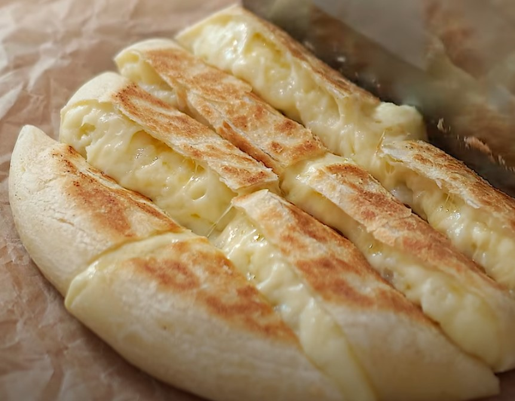

Main Page

Cheese Potato Bread
90g strong flour (bread flour)
55g milk
10g melted unsalted butter
a little salt
1 potato (medium size)
2 tablespoons mayonnaise
mozzarella cheese
For the dough
1) Add flour, milk, melted unsalted butter and a pinch of salt to a bowl.
2) Mix with a spatula or wooden spoon until a lump is formed.
3) Knead by hand for 5 minutes or until the dough does not stick to the side of the bowl.
4) Cover with cling film and let the dough rest in the refridgerator for 1 hour.
For the filling
1) Peel and steam the potato until a fork or tooth pick pierces the potato easily.
2) Mash the potato.
3) Add 2 tablespoons of mayonnaise to the mashed potato. Mix well.
1) Remove the dough from fridge and roll out into a round and flat shape (about 22cm) - thin is imperative to ensure even cooking.
2) Put a generous amount of mozzarella cheese in the center of the dough.
3) Lay mashed potato directly on top of the mozzarella cheese center.
4) Ali more mozzarella cheese to cover the mashed potato. At this point you should have 3 layers - cheese, potato, cheese.
5) Close the dough up by pinching as you would close up a dumpling.
6) Gently flatten the dough with a rolling pin to a diameter depending on the size of your pan. (Go as big as you can)
1) Melt some butter in a hot skillet.
2) Place the dough in seam-side down.
3) Gently brush the top of the dough with more butter.
4) Panfry over medium low heat until golden brown on both sides. You can flip this as many times as you want.
5) Remove from pan, cut into bite-sized pieces and serve warm.